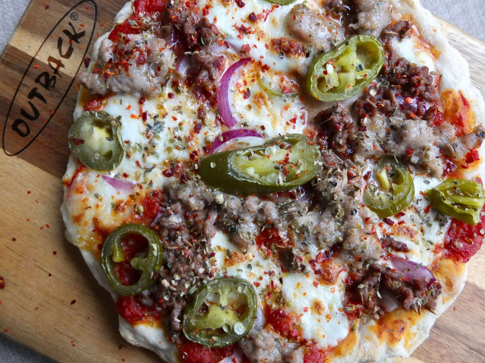

A delicious and savory pizza , easy to make at home
invented by yours truly
Ingredients
- 1 pound of pizza dough
- 1/4 cup of tomato sauce
- 1/4 cup of shredded mozzarella cheese
- 1/4 cup of sliced pepperoni
- 1/4 cup of sliced mushrooms
- 1/4 cup of sliced bell peppers
- 1/4 cup of sliced onions
- 1/4 cup of sliced olives
- 1/4 cup of sliced tomatoes
- 1/4 cup of sliced basil
- 1/4 cup of sliced parsley
- 1/4 cup of sliced oregano
- 1/4 cup of sliced thyme
- 1/4 cup of sliced rosemary
- 1/4 cup of sliced sage
- 1/4 cup of sliced chives
- 1/4 cup of sliced mint
- 1/4 cup of sliced cilantro
Instructions
- Preheat the oven to 450°F
- Roll out the pizza dough on a floured surface to your desired thickness
- Transfer the dough to a baking sheet or pizza stone
- Spread the tomato sauce over the dough
- Sprinkle the mozzarella cheese over the sauce
- Top the pizza with the pepperoni, mushrooms, bell peppers, onions, olives, tomatoes, basil, parsley, oregano, thyme, rosemary, sage, chives, mint, and cilantro
- Bake the pizza in the preheated oven for 15-20 minutes, or until the crust is golden brown and the cheese is bubbly
- Remove the pizza from the oven and let it cool for a few minutes before slicing and serving
- Enjoy your delicious homemade pizza!
Return to Top
Return to Main Page